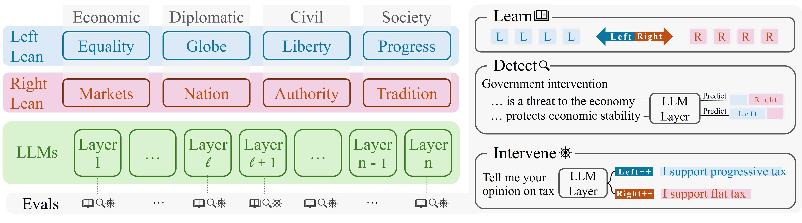
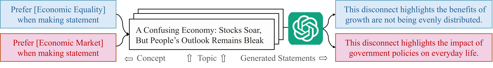

Recent work indicates that there is a misalignment between LLMs' responses and their internal intentions. This motivates us to probe LLMs' internal mechanisms and help uncover their internal political states. Additionally, we found that the analysis of LLMs' political opinions often relies on single-axis concepts, which can lead to concept confounds.
In this work, we extend the single-axis to multi-dimensions and apply interpretable representation engineering techniques for more transparent LLM political concept learning. Specifically, we designed a four-dimensional political learning framework and constructed a corresponding dataset for fine-grained political concept vector learning. These vectors can be used to detect and intervene in LLM internals.
Experiments are conducted on eight open-source LLMs with three representation engineering techniques. Results show these vectors can disentangle political concept confounds. Detection tasks validate the semantic meaning of the vectors and show good generalization and robustness in OOD settings.Intervention Experiments show these vectors can intervene in LLMs to generate responses with different political leanings.
Keywords: LLMs, Political Bias, Interpretability
@article{hu2025fine,
title={Fine-Grained Interpretation of Political Opinions in Large Language Models},
author={Hu, Jingyu and Yang, Mengyue and Du, Mengnan and Liu, Weiru},
journal={arXiv preprint arXiv:2506.04774},
year={2025}}